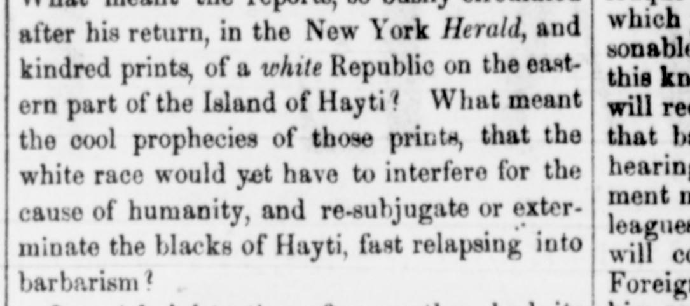

The cool prophecies of those prints, that the white race wouldLas frías profecías de esos periódicos, de que la raza blanca
The newspaper reports that the U.S. government employed special agents, including Mr. Green (employed by Mr. Clayton) and Mr. M. Walsh (employed by Mr. Webster under the current Administration), as emissaries to St. Domingo. It notes that the Senate requested copies of Mr. Walsh's official correspondence, which was communicated on August 27 and subsequently published in the New York Evening Post on the 13th. The publication criticizes these missions as a discreditable violation of the administration's professions of non-intervention in the affairs of a people whose independence has not been recognized.El rotativo consigna que el gobierno de Estados Unidos comisionó agentes confidenciales, entre ellos al Sr. Green (nombrado por el Sr. Clayton) y al Sr. Walsh (designado por el Sr. Webster bajo la actual administración), en calidad de emisarios ante Santo Domingo. Señala que el Senado demandó copias de la correspondencia oficial de Walsh, remitidas el 27 de agosto y divulgadas el día 13 en el New York Evening Post. La publicación censura estas misiones calificándolas de infracción censurable al principio de no injerencia proclamado por el ejecutivo respecto a un pueblo cuya independencia no había sido convalidada.
FULL TEXT:TRADUCCIÓN:
after his return, in the New York Herald, and kindred prints, of a white Republic on the eastern part of the Island of Hayti? What meant the cool prophecies of those prints, that the white race would yet have to interfere for the cause of humanity, and re-subjugate or exterminate the blacks of Hayti, fast relapsing into barbarism?después de su regreso, en el New York Herald, y publicaciones afines, de una República blanca en la parte oriental de la Isla de Haití? ¿Qué significaban las frías profecías de esas publicaciones, de que la raza blanca todavía tendría que interferir por la causa de la humanidad, y resubyugar o exterminar a los negros de Haití, recayendo rápidamente en la barbarie?
[Editor's note: the paper writes of the east as part of Hayti. From 1822 to 1844 the Dominican Republic was held by Haitian military occupation, against its people's will; it restored its independence on February 27, 1844.][Nota del editor: el periódico habla del este como parte de Haití. De 1822 a 1844 la República Dominicana estuvo bajo ocupación militar haitiana, contra la voluntad de su pueblo; restauró su independencia el 27 de febrero de 1844.]
The National Era. Washington, December 23, 1852.
See the original at the Library of CongressVer el original en la Biblioteca del Congreso
Published by: L.P. Noble, 1847-1860Publicado por: L.P. Noble, 1847-1860
Edition: Edition 1Edición: edición 1
Page: 2Página: 2
Frequency: weekly (1847–1860)Frecuencia: semanal (1847–1860)
Collection: Chronicling America, Library of CongressColección: Chronicling America, de la Biblioteca del Congreso
LCCN: sn84026752LCCN: sn84026752
ISSN: 2471-5301ISSN: 2471-5301
OCLC: 10642039OCLC: 10642039
Rights: public domain, according to the Library of CongressDerechos: dominio público, según la Biblioteca del Congreso